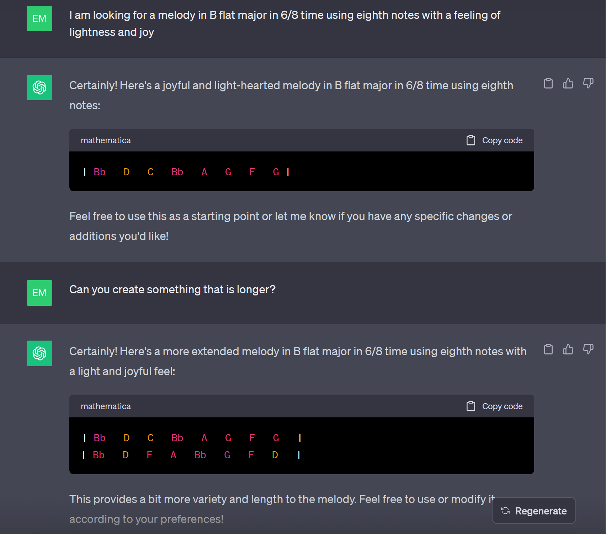
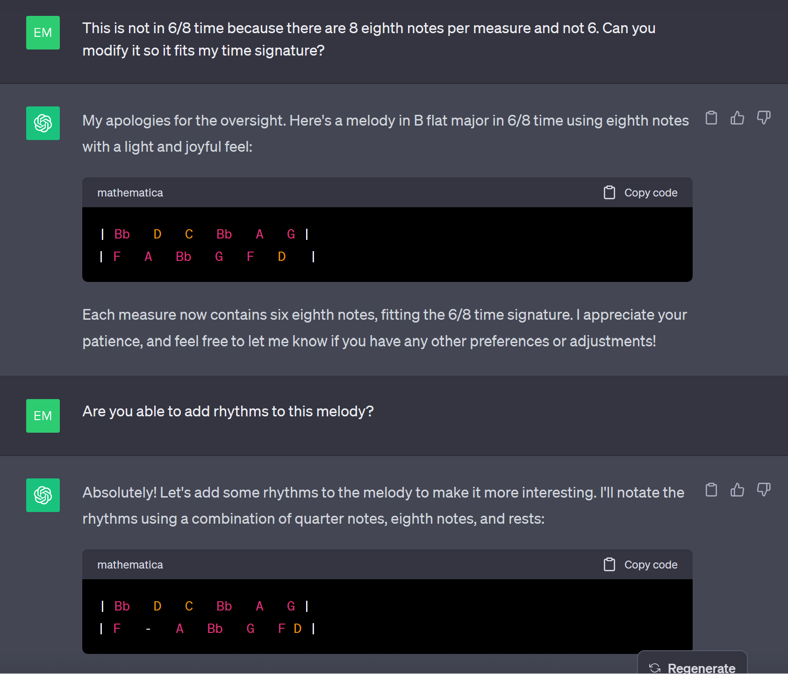
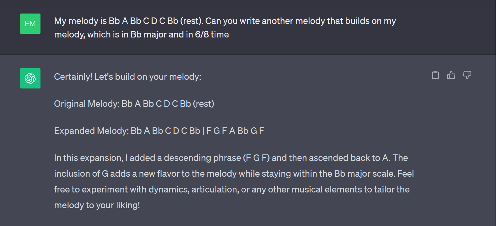
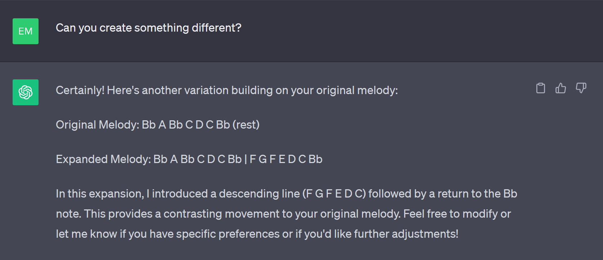

Writer's block is a huge struggle for anyone engaged in creative and artistic tasks. Being stuck with mostly being due to lack of creatvity (or perceived lack of creativity?), lack of ideas
relates to cognitive load: it puts this extra pressure when you want to comoposer (extraneous load)
Self-efficacy: can decrease your self-efficacy because you literally cannot write...
*** think of putting this on a separate nested pageWith the rise of more and more AI technologies, undoubtfully, there must be some applications of AI to composition. In fact, one of the coolest examples of AI applied to classical music is the "completion" of Beethoven's 10'th symphony. Beethoven had never finished writing a 10th symphony, but some sketches have been found, so in 2021, a group of AI reserachers and composers got together and created an AI that would write two movements of this potential symphony based on his sketches and by training it on Beethoven's previous works so that it can compose in Beethoven's style. You can hear what the third movement sounds like here, or if you have some spare time, you can listen to the entire result here. There are many diverging opinions on this, but I personally think the third movement sounds absolutely amazing and very Beethoven-esque. It is very obvious that the AI was trained on Beethoven's works because the main theme replicates his famous 5th symphony opening. I found the fourth movement a bit more strange as it combined several motifs but without any sort of coherence. Some (add the source) argue that the entire product is underwhelming and doesn't represent Beethoven's character, but nevertheless, it is fascinating how the AI was able to create even something that sounds nice, let alone combine some of Beethoven's key musical features. *** one thing to check is how much human input was really in this thing... was it realy the AI that build the whole thing, or was it a human that compiled it together like they did for Schubert.
Nowadays, we have access to ChatGPT to help us with literally any task. One advantage of AIs such as ChatGPT is that they can help us get started on an idea or a a problem we are stuck on by generating new ideas. So can ChatGPT help composers when they are stuck? I conducted a few experiments to find out!
This summer I was working on a composition I was really excited about, and I had come up with a really catchy melody for my piece: However, I could not for the life of me figure out how to transition to the next section of my piece, which was something a bit more lyrical. All my initial ideas sounded bad and I was stuck in a writer's block for several days. I decided to try my chance at ChatGPT to see if it could help me! Unfortunately I did not save the exact output it gave me at the time, but I tried as best I can to recreate my prompt here:  
The ideas that ChatGPT gives are actually quite bad. The first idea doesn't actually fit the time signature I gave It because it should have 6 eighth notes per measure, not eight. Then when it corrects itself, it just took a chunk of 6 notes from each line to make it fit my requirements. Then when I ask it to add some rhythm, it doesn't do a very good job since it only adds one rhythmic variance, which actually brings it back to a melody that can't fit in 6/8 time. This is what the second melody would have sounded like alongside my melody (note that I embellished it with a harmonization and an accompaniment myself):
So I thought that maybe ChatGPT needs to know what I wrote previously so it can build on it. This time it did a bit of a better job, and it was able to even provide a reasoning for its melody:   It creates something a bit more interesting, but again lacks melody. But you can notice that it tries to use my original ideas as a starting point and build something from that to create some sort of interest, even though it is very short. It mimics my melody contour as well as the length. When I combine both of its ideas together and add a harmony and accompaniment, I get something that sounds a bit better:
Now for fun, I asked ChatGPT to just create me a song for violin and cello to test it creative abilities. This is what it came up with (results are actually hilarious): First, the song doesn't respect my requirements - the only thing it did right was give me a violin and cello part and it tried to stay in E minor by starting with an E. Then if you notice carefully, it repeats the same two measures over and over again, and all measures execpt the first one have the same notes for both instruments. It's as if ChatGPT got stuck in a loop and has writer's block.
Moral of the story: if you want to use AI to help get out of writer's block, DON'T use ChatGPT. I think that ChatGPT can instead be used for smaller scale ideas when you are stuck on something since composing an entire composition is quite the task for a general AI that doesn't specialize in music. Some examples:
Now, if you really wanted to use AI to help you in your baroque compositions, there is this neat little online doodle you can try which uses AI to harmonize a melody in 4 parts in Bach's style. It apparently was trained on Bach's pieces to learn harmonization patterns, and Bach is known to have very complex harmonizations with up to 6 parts! (insert source here). This interactive app actually sparked an idea this summer which was for me to write a melody for an entire piece, and let the AI do the rest of the work by harmonizing it and seeing how it sounds (and now this course motivated me to finally finish it!). This is how it sounds (notes in blue are notes that I wrote myself, the rest were AI generated). An ML inspired song by Emma Tomiuk
Of course, this AI has a few limitations: it uses Bachs' style specifically, it has only a certain rhythm flexibility, and it can only do 2 measures at a time. With these limitations, the piece above doesn't sound too coherent, so I modified it slightly so adjust it to make it a bit more playable and coherent with my initial ideas. However, a lot of times, this little AI was pretty good at giving me some nice harmonization ideas! An ML inspired song_update by Emma Tomiuk
AIs like this that are specifically made to work with music (unlike chatGPT) can thus be used in tandem with our own creativity so that the AI builds off of my ideas and I build off of the AIs ideas. However, of course there are many problems that AI brings, especially to artistic industries such as music regarding whether work using AI is really your own work, which is addressed more in detail in this section.
other potential solution: reach out to someone and they can provide and help you construct the knowledge (connect back to social constructivism)